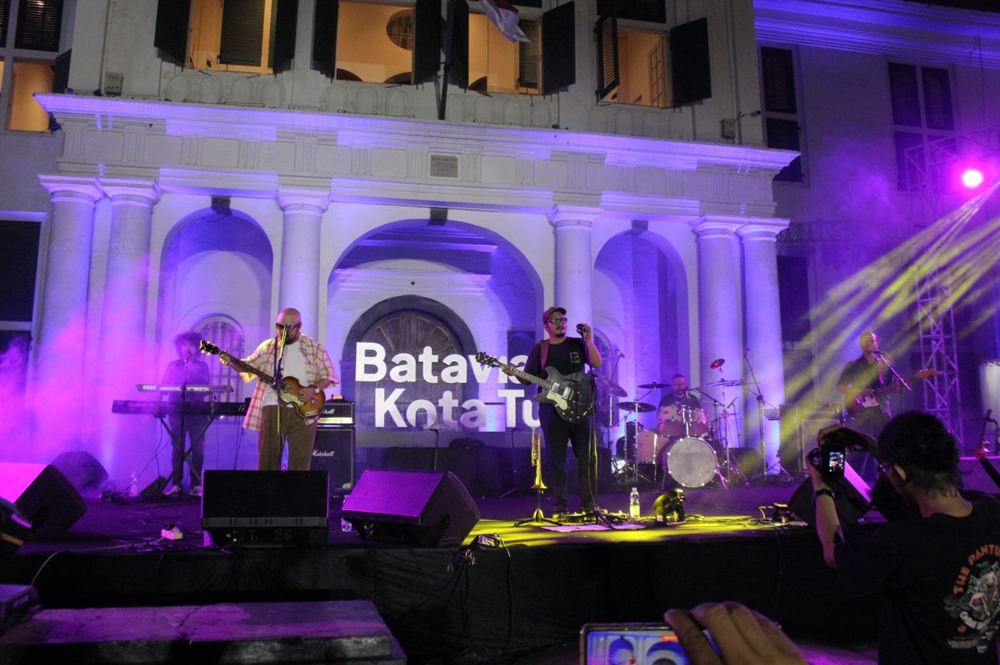
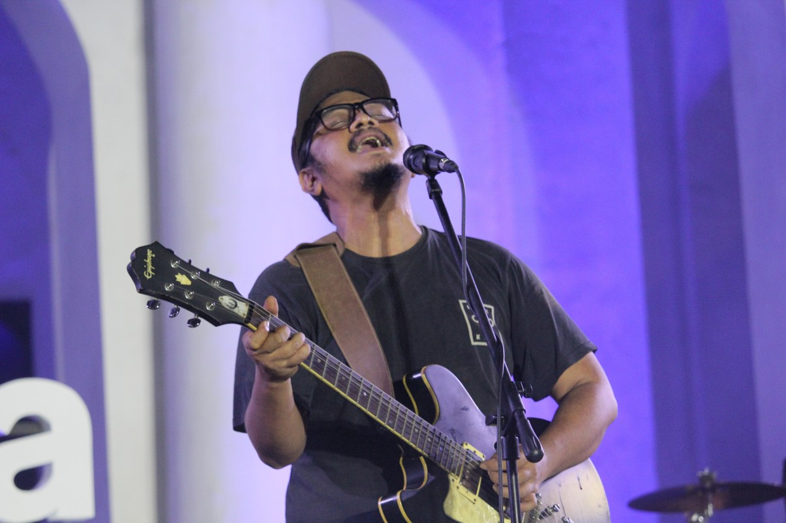
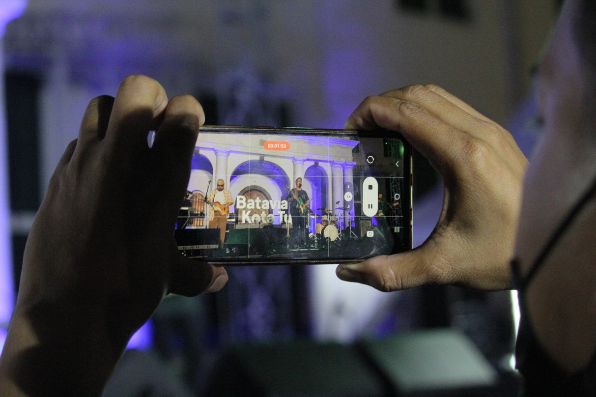
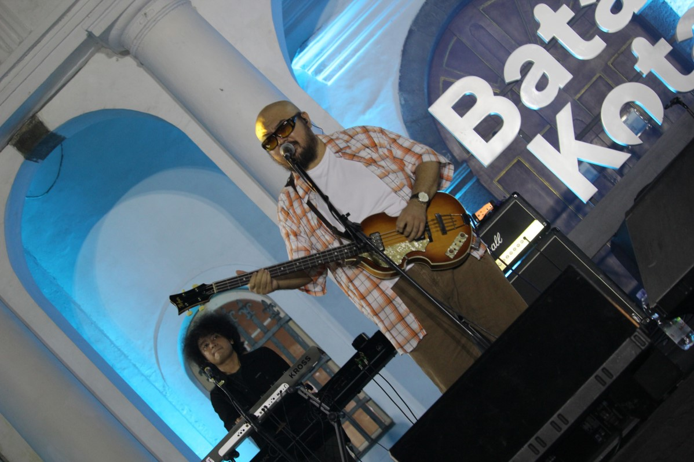
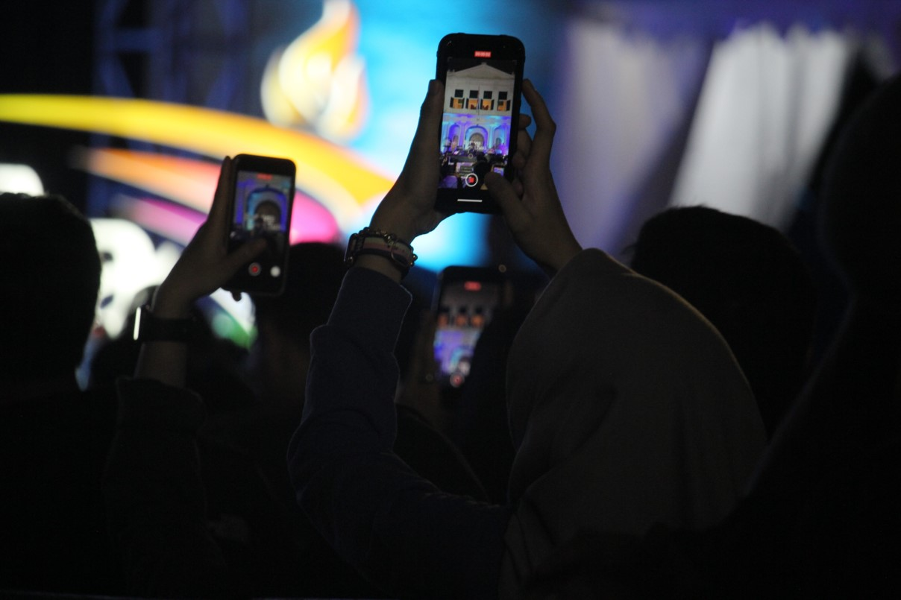

M.Azam Khoiruman
NIM 11210251000073
EDFAT adalah metode yang digunakan dalam fotografi jurnalistik. EDFAT merupakan singkatan dari Entire, Detail, Framing, Angle dan Time. Metode ini membantu kita untuk akrab dengan lingkungan dan juga melatih bagaimana cara pandang melihat sesuatu dengan detail. Metode EDFAT juga membantu menghasilkan foto dengan teratur, sehingga foto tersebut menghasilkan rangkaian cerita yang memudahkan orang memahaminya
Entire atau dikenal juga sebagai establish shot atau keadaan keseluruhan dari lokasi atau acara yang akan kita foto. Dalam mengambil gambar entire, ambil keseluruhan lingkungan termasuk manusianya. Cara ini dianggap banyak fotografer jurnalistik baik untuk mengenalkan subyek foto dan lingkungannya kepada para pembaca.
Contoh:
Sejumlah pengunjung merekam penampilan Sore Ze Band di Taman Fatahillah dalam acara Festival Batavia Kota Tua, Jakarta Barat, Minggu (28/8/2022). Festival Batavia Kota Tua yang diselenggarakan oleh Pemprov DKI Jakarta dan Jakarta Experience Board berlangsung selama 3 hari mulai dari 26 Agustus 2022 sampai 28 Agustus 2022.
Foto Oleh: M.Azam Khoiruman"Detail adalah hal-hal rinci yang ada di suatu lokasi atau acara. Mengambil gambar detail dengan cara bergerak maju mendekati obyek untuk melihat lebih detail. Ambil visual yang kuat sebagai ciri khusus dari subyek dan atur komposisi yang bagus.
Contoh:
Personil Sore Ze Band, Ade Firza, menyanyikan lagu berjudul R14 di Taman Fatahillah dalam acara Festival Batavia Kota Tua, Jakarta Barat, Minggu (28/8/2022). Festival Batavia Kota Tua yang diselenggarakan oleh Pemprov DKI Jakarta dan Jakarta Experience Board berlangsung selama 3 hari mulai dari 26 Agustus 2022 sampai 28 Agustus 2022.
Foto Oleh: M.Azam Khoiruman"Framing atau pembingkaian adalah bagaimana cara kita menempatkan obyek atau subyek di dalam foto. Pemahaman tentang komposisi dan sudut pandang akan membantu kita dalam menempatkan obyek ataupun subyek ke dalam foto. Saat memotret perhatikanlah penempatan background dan foregroud. Background adalah latar belakang objek, sedangkan forefround letaknya nya didepan objek.
Contoh:
Pengunjung merekam penampilan Sore Ze Band di Taman Fatahillah dalam acara Festival Batavia Kota Tua, Jakarta Barat, Minggu (28/8/2022). Festival Batavia Kota Tua yang diselenggarakan oleh Pemprov DKI Jakarta dan Jakarta Experience Board berlangsung selama 3 hari mulai dari 26 Agustus 2022 sampai 28 Agustus 2022.
Foto Oleh: M.Azam Khoiruman"Angle atau sudut pengambilan menentukan dari arah mana kita akan mengambil suatu foto. Atur sudut pengambilan dari berbagai sudut, bisa dari atas, bawah, dekat atau jauh, samping kiri atau kanan subyek.
Contoh:
Personil Sore Ze Band, Awan Garnida, menyanyikan lagu berjudul Sssst di Taman Fatahillah dalam acara Festival Batavia Kota Tua, Jakarta Barat, Minggu (28/8/2022). Festival Batavia Kota Tua yang diselenggarakan oleh Pemprov DKI Jakarta dan Jakarta Experience Board berlangsung selama 3 hari mulai dari 26 Agustus 2022 sampai 28 Agustus 2022.
Foto Oleh: M.Azam Khoiruman"Waktu pengambilan memberikan variasi terhadap foto yang bisa kita hasilkan. Pengambilan foto pada momen puncak dapat menghasilkan foto yang merekam perpaduan sempurna sebuah peristiwa. Dalam bahasa fotografi cara ini biasa disebut momment in time yang tepat.
Contoh:
Sejumlah pengunjung merekam penampilan Sore Ze Band di Taman Fatahillah dalam acara Festival Batavia Kota Tua, Jakarta Barat, Minggu (28/8/2022). Festival Batavia Kota Tua yang diselenggarakan oleh Pemprov DKI Jakarta dan Jakarta Experience Board berlangsung selama 3 hari mulai dari 26 Agustus 2022 sampai 28 Agustus 2022.
Foto Oleh: M.Azam Khoiruman"